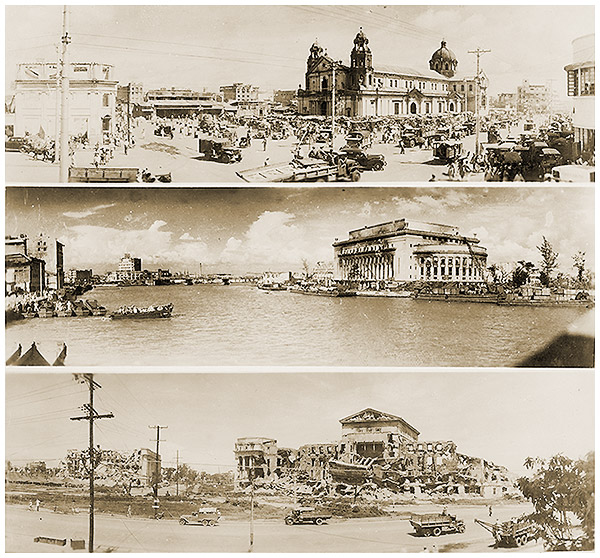

|
j
a v a s c r i p t |
April 24, 1945
"Russians advance down three main boulevards in Berlin." Japanese losses in the Philippines now total 324,000; 10,896 since April 16. In the same period the Americans lost 586 killed, 3 missing and 2,168 wounded. The ratio has gone sharply against MacArthur as the fight moves to the hinterland.

Manila Panoramas
Quiapo Church, Pasig & GPO, Legislative Building |
|
|
|
|